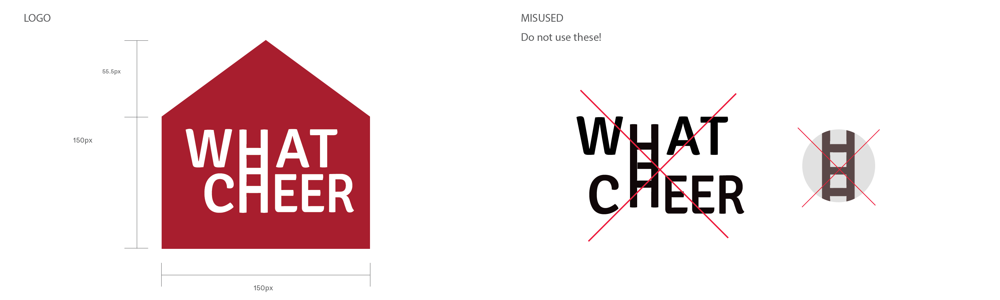
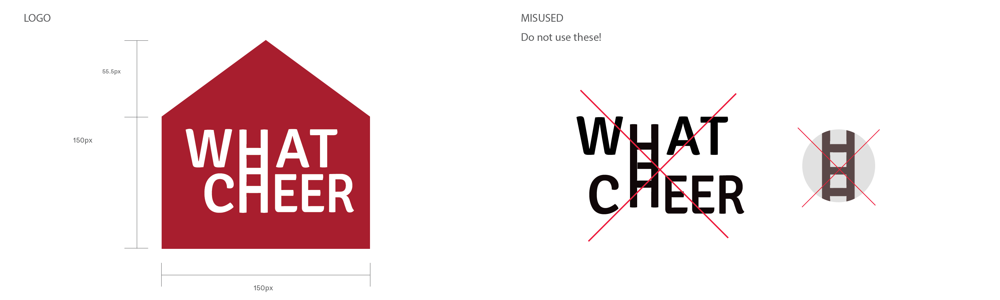
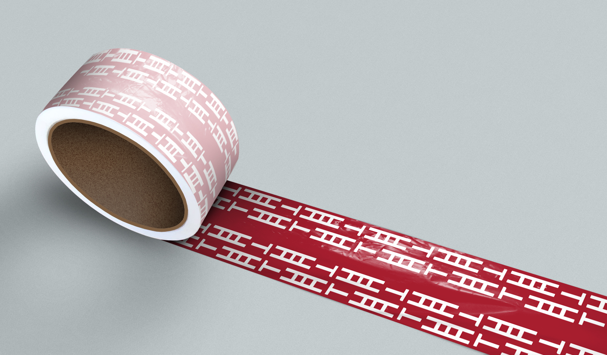
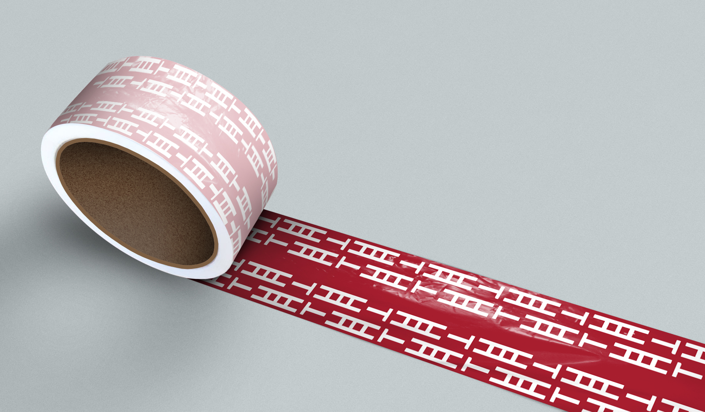

WHAT CHEER
2019
Brand Identity, Motion
The task was to create a brand identity for What Cheer hardware store located in Providence, Rhode Island. I wanted to represent the logo with an image that can be easily associated to a hardware store. The logo portrays the form of a house with 'H' that acts as a ladder.


 

 
